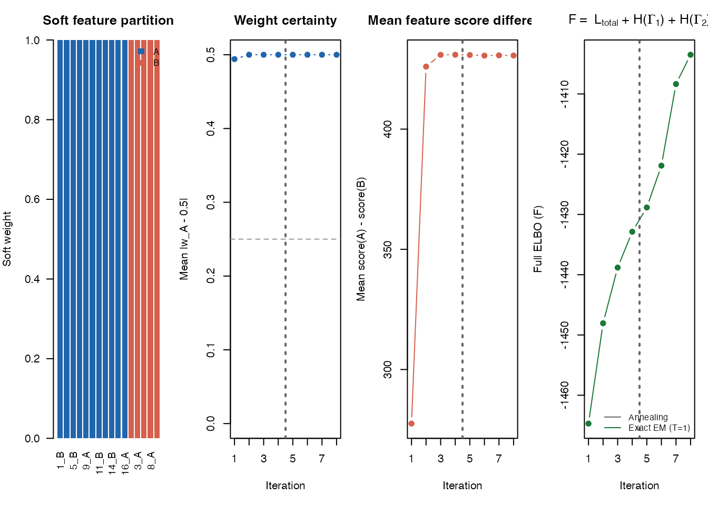

Distinguishing Two Ordering Systems with Soft Partitioning
dual_ordering_soft_partition.RmdThis vignette shows a minimal end-to-end example for the dual-ordering tools. We will:
- Simulate features from two different latent sample orderings.
- Fit
soft_two_trajectory_EM(). - Check whether the learned feature assignments recover the two ordering systems.
For clarity, we simulate only two signal groups here, so
d_noise = 0.
Note: this vignette benchmarks the legacy csmooth_em
soft-partition path soft_two_trajectory_EM(). For new
analyses, prefer soft_two_trajectory_cavi(), which is the
recommended dual-ordering backend.
1 Simulate two ordering systems
simulate_dual_trajectory() generates one block of
features driven by ordering A and another block driven by ordering B.
The feature columns are shuffled, so the method has to infer the
grouping from the data matrix alone.
sim <- simulate_dual_trajectory(
n = 100,
d1 = 8,
d2 = 8,
d_noise = 0,
sigma = 0.15,
crossing = FALSE,
seed = 42
)
X <- sim$X
cat("Data dimensions:", nrow(X), "samples x", ncol(X), "features\n")
#> Data dimensions: 100 samples x 16 features
print(table(sim$true_assign))
#>
#> A B
#> 8 8The simulation also gives the true latent positions t1
and t2. We can use them only for visualization, not for
fitting.
jA <- which(sim$true_assign == "A")[1]
jB <- which(sim$true_assign == "B")[1]
yA <- as.numeric(scale(X[, jA]))
yB <- as.numeric(scale(X[, jB]))
o1 <- order(sim$t1)
o2 <- order(sim$t2)
op <- par(no.readonly = TRUE)
on.exit(par(op), add = TRUE)
par(mfrow = c(2, 2), mar = c(4, 4, 2.5, 1))
plot(sim$t1[o1], yA[o1], type = "l", lwd = 2,
xlab = "Ordering A (t1)", ylab = "Scaled feature value",
main = sprintf("True A feature: %s vs t1", colnames(X)[jA]))
plot(sim$t2[o2], yA[o2], type = "l", lwd = 2,
xlab = "Ordering B (t2)", ylab = "Scaled feature value",
main = sprintf("True A feature: %s vs t2", colnames(X)[jA]))
plot(sim$t1[o1], yB[o1], type = "l", lwd = 2,
xlab = "Ordering A (t1)", ylab = "Scaled feature value",
main = sprintf("True B feature: %s vs t1", colnames(X)[jB]))
plot(sim$t2[o2], yB[o2], type = "l", lwd = 2,
xlab = "Ordering B (t2)", ylab = "Scaled feature value",
main = sprintf("True B feature: %s vs t2", colnames(X)[jB]))One representative feature from each true group, plotted against both latent orderings.
The A feature tends to look smoother against t1, while
the B feature tends to look smoother against t2. The model
will try to discover this pattern feature by feature.
2 Fit the soft dual-ordering model
We use a small configuration so the vignette runs quickly.
res <- soft_two_trajectory_EM(
X,
init_method1 = "PCA",
K = 8,
n_outer = 4,
inner_iter = 1,
max_converge_iter = 4,
verbose = FALSE
)
stopifnot(identical(colnames(res$pi_weights), c("A", "B")))
stopifnot(all(res$assign %in% c("A", "B")))
dim(res$pi_weights)
#> [1] 16 2Each feature now has two weights:
-
A: how strongly it aligns with ordering A -
B: how strongly it aligns with ordering B
3 Inspect the learned partition
summary_df <- summarise_soft_partition(res)
summary_df$truth <- sim$true_assign
head(summary_df[order(summary_df$truth, -summary_df$A), ], 8)
#> feature A B assign entropy truth
#> 6 V6 1 0 A 0 A
#> 9 V9 1 0 A 0 A
#> 16 V16 1 0 A 0 A
#> 2 V2 0 1 B 0 A
#> 3 V3 0 1 B 0 A
#> 7 V7 0 1 B 0 A
#> 8 V8 0 1 B 0 A
#> 13 V13 0 1 B 0 AA simple group-level check is to average the learned weights by true feature type.
aggregate(
cbind(weight_A = summary_df$A, weight_B = summary_df$B, entropy = summary_df$entropy),
by = list(truth = summary_df$truth),
FUN = mean
)
#> truth weight_A weight_B entropy
#> 1 A 0.375 0.625 0
#> 2 B 1.000 0.000 0On an easy simulation, true A features should have higher average
weight_A, and true B features should have higher average
weight_B.
4 Visual diagnostics
plot_soft_weights(
res,
feature_names = paste0(seq_len(ncol(X)), "_", sim$true_assign),
sort_by_weight = TRUE
)
Soft feature weights and convergence diagnostics.
The first panel shows the inferred feature partition. Features from the same true ordering tend to cluster together when sorted by their A-weight.
5 Compare against the true grouping
evaluate_partition() handles the A/B label-switching
issue automatically.
eval <- evaluate_partition(res, sim$true_assign)
eval
#> $accuracy
#> [1] 0.8125
#>
#> $best_alignment
#> [1] "flipped (A=B, B=A)"
#>
#> $confusion_table
#> truth
#> predicted A B
#> A 5 0
#> B 3 8
eval$confusion_table
#> truth
#> predicted A B
#> A 5 0
#> B 3 8In this simulation, the method cleanly distinguishes the two ordering systems. On harder data, the soft weights and entropy values are often more informative than the final hard assignment alone.
6 Takeaway
When different subsets of features follow different latent sample
orderings, soft_two_trajectory_EM() gives a compact way
to:
- infer two ordering systems jointly,
- assign each feature to the ordering it matches best,
- inspect uncertainty through soft weights instead of only hard labels.
This is a useful first diagnostic when a single global pseudotime does not seem to explain all features equally well.